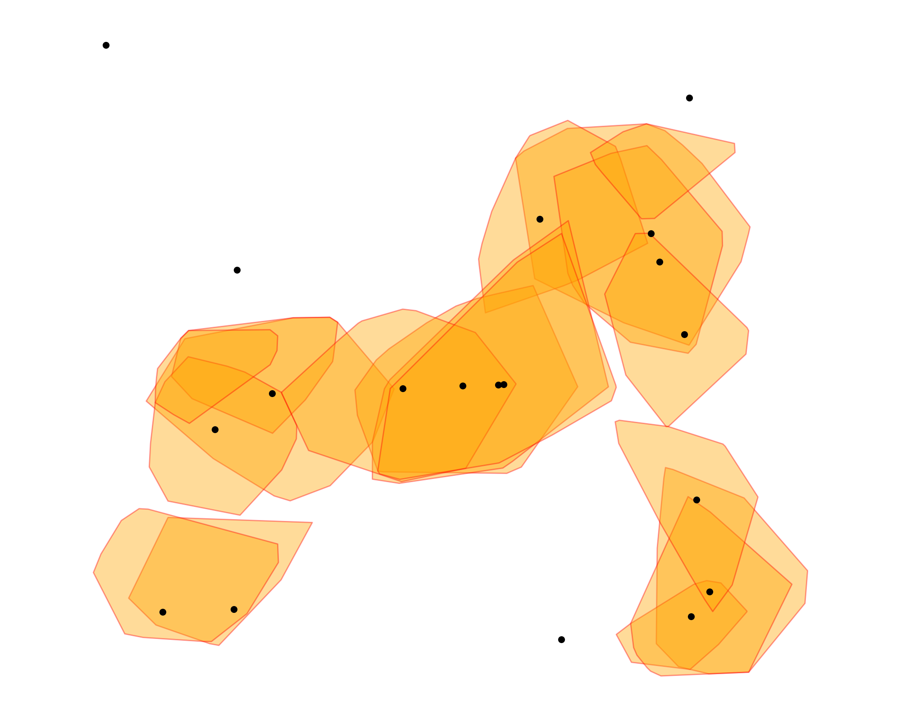
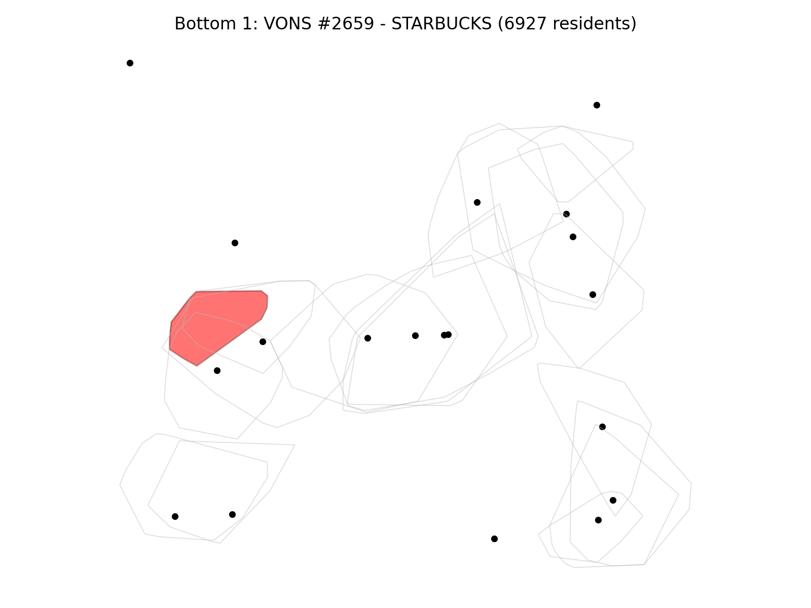
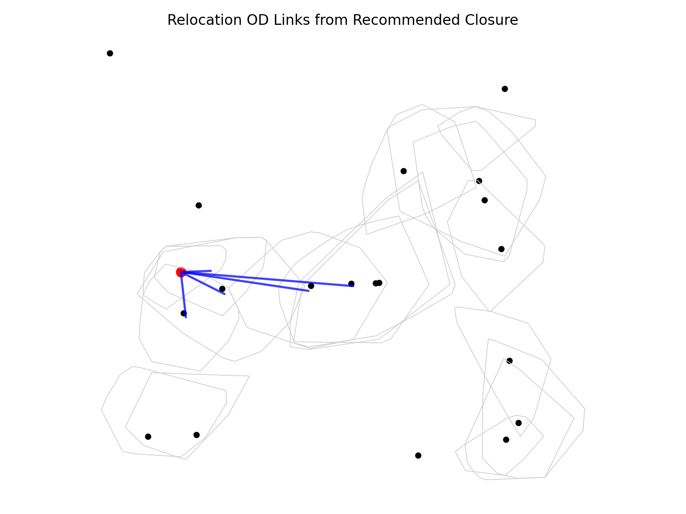

Unit 02: 네트워크 분석 및 상권 평가 (Network Analysis & Market Research)
도구 숙련자 및 오퍼레이터 양성
ArcGIS 워크플로우는 Network Analyst 기능을 사용하여 도로 데이터를 '살아있는 네트워크'로 만드는 설정에 집중합니다.
단순한 선 데이터를 길 찾기가 가능한 도로 데이터로 변환합니다. 일방통행, 제한 속도 등을 마법사 창에서 일일이 설정합니다.
스타벅스 위치를 등록하고 '3분'이라는 시간 한계를 입력한 뒤, 도로를 따라 퍼져나가는 등시선을 생성합니다.
상권 영역과 인구 통계 블록을 포개어, 상권 내에 거주하는 고객수를 테이블로 합산해 냅니다.
※ 오퍼레이터의 필수 관문: 단계별 버튼 클릭 가이드
[1단계] 네트워크 데이터셋 구축 데이터 우클릭 ▶ New Network Dataset마법사를 통해 도로의 연결성과 주행 시간(Minutes) 비용을 설정합니다.
[2단계] 서비스 영역 분석 실행 Analysis 탭 ▶ Network Analysis ▶ Service Area| Facilities | 스타벅스 점 데이터 로드 |
|---|---|
| Cutoffs | '3' (분) 입력 |
| Travel Mode | Driving Time 선택 |
| Target / Join Features | 생성된 상권 / 인구 통계 데이터 |
|---|---|
| Field Map | 인구수 필드를 'Sum(합계)'으로 설정 |
지식 창조자 및 GIS 엔지니어 양성
파이썬 방식은 그래프 이론을 바탕으로 도로망을 점과 선의 수학적 모델로 변환하여 메모리에서 직접 계산합니다. 이번 실행에서는 캐시된 Riverside 운전 도로망, Starbucks 점 자료, ACS block group 자료를 사용해 3분 상권과 폐점 후보, 대체 매장 이동시간을 다시 계산했습니다.
OSMnx 라이브러리를 사용하여 OpenStreetMap에서 도시의 모든 도로와 교차로를 수학적 '그래프' 구조로 불러옵니다.
표준 라이브러리인 networkx의 다익스트라 알고리즘을 호출하여 이동 시간이 3분 이내인 모든 지점을 탐색합니다.
Shapely로 점들을 감싸는 다각형을 만들고 GeoPandas로 인구수를 즉시 집계하는 파이프라인을 설계합니다.
※ 지식 창조자의 무기: 유료 도구 없이 수학으로 상권을 직접 설계하는 법.
[핵심 로직 1] OSMnx를 이용한 도로망 그래프 구축OSMnx 그래프 이론 기반 상권 자동 분석 결과물
OSMnx와 NetworkX를 활용하여 구현된 그래프 기반 상권 분석 결과입니다.
오픈 소스 데이터만으로 수백 개 매장의 접근성을 동시에 계산하고 최적의 폐점 전략을 제안합니다.

Python-Generated Starbucks Service Areas
| Store ID | Catchment Pop | Status |
|---|---|---|
| VONS #2659 - STARBUCKS | 6,927 | Recommended Closure |
| STARBUCKS #11463 | 8,057 | Review |
| STARBUCKS #6616 | 8,095 | Review |
Store Closure Matrix (Automated Decision)
Nearest alternatives from VONS #2659: Starbucks #5685 (2.05 min), #11025 (3.37 min), #5369 (4.06 min)

Bottom Candidate Map: VONS #2659

OD Relocation Links from Closure Candidate